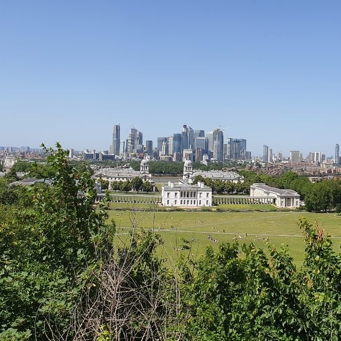

London
London je glavni grad Engleske te je jedna od najposjećeniijih metropola s velikim brojem atrakcija za turiste. Tako od muzeja obavezno trebate posjetiti Natural History Museum. U njemu možete pronaći svega od evolucije biljaka i životinja do svemira. Kada se uđe u muzej mogu se primjetiti i učenici mnogih londonskih škola jer je primjenjen za djecu školskog uzrasta, ali ni odraslima ne će biti dosadno.

Još jedno mjesto koje je bi trebali pojetiti je Royal Observatory na Greenwichu. Tamo se nalazi muzej, ali i linija nultog meridijana te možete slikati svoj prelazak s istočne na zapadnu polutku Zemlje i obrnuto. Također zvjezdarnica je na brdu tako da ima lijepi pogled na grad te je ispred livada na kojoj možete imati piknik.
Kada smo kod lijepih pogleda na grad onda obavezno morate otići na London Eye. S njega možete vidjeti Buckinghamsku palaču a i britanski parlament.

Također kada ste u london morate posjtiti Tower Bridge i Tower of London te su oni međusobno jako blizu. Tower Bridge je jedan od najpoznatijih mostova na svijetu. Ponajviše je poznat zbog dizanja dijelova mosta kako bi prošli brodovi te je to jedna od najvećih atrakcija u Londonu. Danas je otvoren za sav promet, a preko njega se može i pješice. U tornjevima se nalazi i Mostovski muzej u kojem možete razgledati kako su u počecima podizali most za potrebe prolaska brodova. U tom muzeju se možete prošetati kroz staklene prolaze iznad mosta.
Tower of London je sagrađen 1066. i sam dvorac je služio kao zatvor od 1100. do 1952. godine. Unutar dvorca održava se stalna izložba kraljevskih dragulja u kojoj se možete vidjeti veliku kolekciju dragulja koja pripada britanskoj kraljevskoj obitelji.